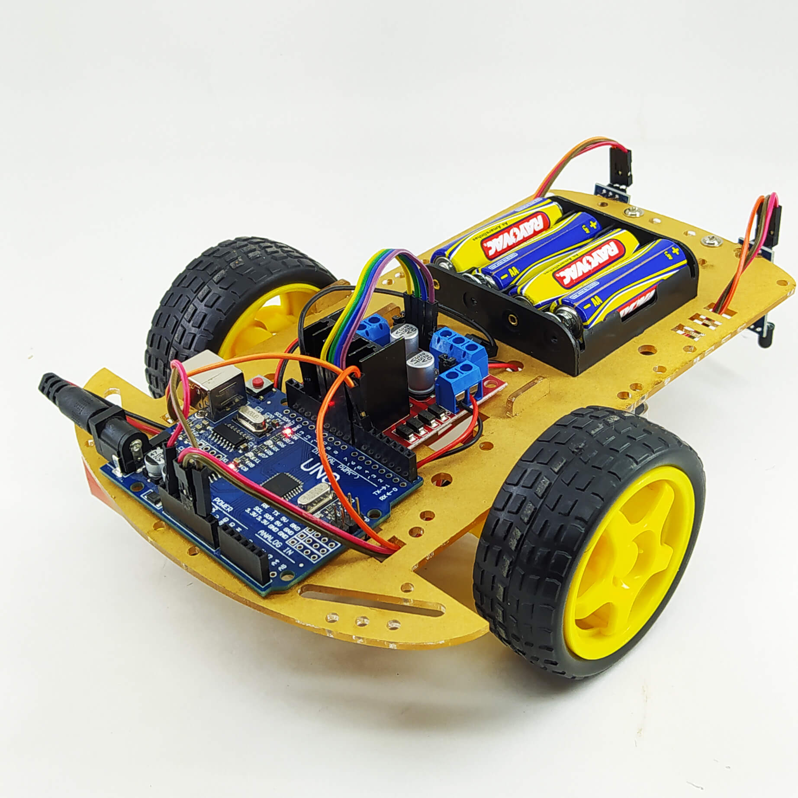

Sou Aluno do curso de Sistemas de Informação, estou no quarto periodo e moro na cidade de rialma.
A escolha da minha graduação é fruto da minha trajetória com a
tecnologia. Minha paixão pela área começou durante o curso técnico em
Informática integrado ao ensino médio no IF Goiano - Campus Ceres. Em
2016, logo após a conclusão, ingressei no curso de Sistemas de
Informação. Contudo, devido a circunstâncias pessoais, precisei
interromper os estudos e passei quatro anos afastado do setor de
Tecnologia da Informação.
Em 2022, migrei para o setor elétrico — segmento em que atuo até hoje —,
onde pude constatar a escassez de profissionais verdadeiramente
capacitados. Ao identificar diversas falhas e oportunidades de melhoria
nos sistemas da empresa em que trabalho, percebi que detinha o
conhecimento necessário para solucioná-las. Esse diagnóstico reativou
meu interesse pela tecnologia, motivando-me a reiniciar a graduação em
Sistemas de Informação do zero.
Atualmente, venho obtendo um excelente desempenho acadêmico e
aprimorando continuamente minha capacidade de resolver problemas
operacionais de forma eficiente e descomplicada. Tenho como premissa em
minhas decisões a constante melhoria da experiência do usuário (UX).
2015: terminei o ensino medio no IFGoiano campus ceres, com o curso de tecnico em informatica integrado ao ensino medio
2016: Iniciei o curso de sistemas de informação no IFGoiano campus ceres, onde permaneci até 2020, porem não conclui o curso
2025: Iniciei novamente o curso de sistemas de informação no IFGoiano campus ceres, onde permaneço ate o momento, sendo bolsista voluntario do laboratorio de robotica.
| Elemento Utilizado | Função no projeto | Status da execução |
|---|---|---|
| raspbarypi4 | Utilizado para fazer o processamento e gerenciamento da execução | Em desenvolvimento do algoritimo controlador |
| Carrinho arduino com conexão bluetooth | Robo que sera movimentado pelo algoritimo desenvolvido pelo usuario | Pronto, funcional |
| leitor de codigo de barras | Fazer a leitura dos codigos de barra com as intruções de execução do algoritimo | Leitura funcional |
Meu perfil no GitHub
Site do IF Goiano Campus Ceres
heitor.souza@estudante.ifgoiano.edu.br